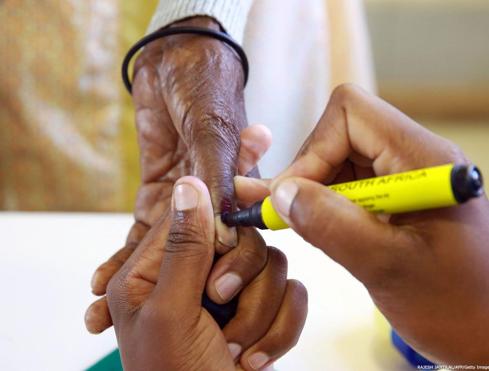

تشخیص تقلب انتخاباتی
نویسنده: رافائل لوپز-پینتور
تقلب انتخاباتی را میتوان هر عملی دانست که برای مخدوشکردن فعالیتهای انتخاباتی و لوازم مربوط به انتخابات صورت میگیرد تا بر نتیجه انتخابات تاثیر گذارد، که ممکن است اراده حقیقی رایدهندگان را مخدوش یا خنثی کند.
دو نوع عمده تقلب انتخاباتی عبارتاند از: تقلب تعیینکننده نتیجه، که بر نتیجه انتخابات اثر میگذارد به طوری که اگر تقلب به وقوع نپیوسته بود برندگان و بازندگان متفاوتی معرفی میشدند؛ و تقلب غیر تعیینکننده نتیجه، که تاثیری بر نتیجه انتخابات ندارد (یعنی برندگان و بازندگان در صورت عدم وقوع تقلب نیز یکسان میبودند.) هر دو نوع تقلب انتخاباتی شامل تخلفاتی کیفری هستند که لازم است بر اساس قانون مجازات شوند؛ با این وجود، تقلب تعیینکننده نتیجه، پیامدهای سیاسی جدیتری به دنبال میآورد و به یک حزب یا شخص این امکان را میدهد تا منصبهای عمومی را خلاف خواست مردم تصاحب کند.

ناظران بسیاری فساد را مترادف تقلب انتخاباتی میبینند. اما گرچه تقلب مسلما نوعی از فساد است، تنها یک شکل از شکلهای متفاوتی است که فساد میتواند به خود بگیرد، هرچند یکی از روشنترین و جدیترین شکلها باشد. فساد به رفتاری منفعتطلبانه اطلاق میشود که از قواعد رسمی حاکم بر رفتار متصدی سمت تخطی کند. این امر شامل مسائل عمیق و ساختاری در حوزه دولتداری و حاکمیت قانون است، که عموما سوء مدیریت اموال عمومی یا ارتشاء را نیز به همراه دارد. تقلب انتخاباتی به طور خاص به اقدامی فریبکارانه یا مسامحهگرانه در روند انتخابات اشاره دارد که به قصد ممانعت از ظهور خواست عمومی در نتیجه انتخابات صورت میگیرد.
تقلب انتخاباتی بیشتر مواقع بر اثر فعل مستقیم یا ترک فعل عامدانه مسئولان اداری انتخابات واقع میشود که به دیگران (برای مثال ماموران قوه مجریه یا احزاب سیاسی) اجازه میدهد در روند انتخابات مداخله کنند. برای مثال، مقامات اداری پایینتر از سطح ملی با مخدوشکردن و دستبردن درنتایج انتخابات ریاست جمهوری اوت ۲۰۰۹ افغانستان آشکارا نسبت به حفاظت از خواست رایدهندگان افغان مسامحه کردند. این نحوه وقوع تقلب عارضه فقدان قانون و ناکارامدی نهادی به خصوص در سلسله مراتب حکومتی است.
تقلب انتخاباتی جدیترین صورت سوءرفتار انتخاباتی به ویژه از جانب مقامات حکومتی و احزاب سیاسی و نمایندگان نامزدها است که تقریبا هرگونه تخلفی را که فرایندها و لوازم انتخاباتی را تحت تاثیر قرار دهد شامل میشود. ولی همه سوءرفتارها به حد تقلب نمیرسند. اغلب انواع سوءرفتار در طول روند انتخابات به شکل بیانضباطی، ناکارایی یا خطا در مدیریت در سطوح مختلف بروز میکنند که اگر حسن نیت وجود داشته باشد قابل حل و تصحیحاند. بیانضباطیها بیشتر نواقص و قصوراتی هستند از جنس املاء اشتباه اسامی رایدهندگان در دفاتر ثبتی، علائم غیرواضح اما قابل استنباط بر روی برگههای رای، کمبود یا کیفیت نازل جوهر بادوام، عدم انطباق تعداد آراء و تهبرگها، عدم برابری تعداد تهبرگها در مراحل مختلف شمارش، اشکال فنی وبسایت نهاد مدیریت انتخابات در حین اعلام نتایج و تاخیر در رسیدگی به شکایات.
مشکلات تخمین ابعاد تقلب انتخاباتی
در هنگام تعیین ابعاد تقلب در یک انتخابات فرضی ملاحظات عدیده دیگری نیز وجود دارد. یک ملاحظه عمده دشواری سنجش میزان تاثیر تقلب بر نتایج است. برای مثال، از چه طریق –مادی یا روانشناختی- و تا چه حد ارعاب یا خرید آراء بر نتیجه انتخابات موثر بوده است؟ منظور از «مادی» تنها مخدوش کردن جنبههای فیزیکی انتخابات از قبیل فهرست اسامی رایدهندگان، برگههای رای، فهرست آراء و تجهیزات ارتباطاتی یا کامپیوتری نیست، بلکه رشوهدادن از طریق وعده استخدام یا تهدید به اخراج، پرداخت حقالزحمه ارائه خدمات، تعهد شفاهی یا کتبی مبنی بر عقد قراردادهای آتی دولتی، وعده کمک خرج یا غذا و خرید رای را نیز در بر میگیرد. سازوکارهای «روانشناختی» هر امری است که مربوط به ارعاب فرد رایدهنده یا گروهی از رایدهندگان باشد. ارعاب ممکن است متضمن استفاده از خشونت یا تنها محرومیت از برخی کالاها و خدمات دولتی باشد.
اعمال متقلبانهای همچون مخدوشکردن فهرست اسامی یا جعل برگه شناسایی رایدهندهها میتواند به طور معناداری نتایج انتخابات را تغییر دهد و ممکن است تعیین مقدار تاثیر آن نیز به شدت دشوار باشد. نمونهای که پوشش خبری خوبی پیدا کرد انتخابات عمومی سال ۲۰۰۳ گواتمالا بود که در آن حزب حاکم به طور گسترده به خرید آرای پادگانها دست زد و با استفاده از خشونت و ارعاب و فشار بر کارکنان دولت که موقعیت شغلیشان در خطر بود سعی در تغییر متقلبانه نتایج انتخابات داشت. علیرغم این تقلب گسترده و برخلاف انتظار همگان، حزب حاکم آن انتخابات را با فاصله ۵ تا ۲۰ درصد در سطوح شهری، پارلمانی و ریاستجمهوری واگذار کرد.
بیانضباطیهای حلنشده نیز ممکن است به حدی برسند که نتیجهای متقلبانه حاصل شود. در این مورد به این دلیل که موارد تقلب بسیار کوچکاند شاید نتوان شدت تقلب را در حین روند انتخابات ارزیابی کرد. هنگامی که جمعیتی آسیبپذیر به واسطه مشکلات عملیاتی در فهرستهای ثبت مدنی، انتخاباتی یا شهروندی به طور عامدانه و نظاممند از اعمال حقوق سیاسی یا اجتماعیاش محروم یا باز داشته میشود موقعیتی به غایت پیچیده بروز میکند. نتیجه آن است که حق مشارکتِ اقلیتها، افراد دارای معلولیت، فقرا، زنان و جوانان به سبب ایدئولوژی گروه حاکم یا تبعیضی که این گروه اعمال میکند انکار میشود. حق مشارکت این گروهها اغلب در خطر نادیدهگرفتهشدن و انکار است حتی اگر بر طبق شرایط سنی و ثبتی واجد حق رای شناخته شوند. در صورت وجود این شرایط، حق مشارکت سیاسی بدان گونه که در میثاق بینالمللی حقوق مدنی و سیاسی (ICCPR) سازمان ملل مطرح شده مورد نقض قرار گرفته و بنابراین این فرض که نتیجه نمایانگر خواست مردم است صحت ندارد، زیرا بخش بزرگی از شهروندانِ واجدِ شرایط عامدانه از جمعیت رایدهنده کنار گذاشته شدهاند.
برای مثال، دست بردن در فهرست اسامی رایدهندگان تا پیش از جنگ جهانی دوم به طور متناوب در برخی از کشورهای اروپای غربی انجام میگرفت، این مسئله همچنین تا پیش از جنبش حقوق مدنی دهه ۱۹۶۰ در ایالات جنوبی آمریکا و حتی امروزه در بسیاری از کشورهای جهان روی میدهد. هرگاه بخش بزرگی از مردم از سیستم رایگیری حذف شوند، این سوال پیش میآید که آیا نتایج انتخابات مورد بررسی در صورت شرکت آن گروه متفاوت میبود یا نه؟ برخی مسائل نیز باید به شکل مورد به مورد بررسی شوند. برای مثال، آیا میتوان در صورت بروز این شرایط ادعای تقلب را پذیرفت؟ و اگر پاسخ مثبت است، آیا میتوان انتخابات را مشروع به حساب آورد؟
نقش ارتباطات مدرن و فناوری اطلاعات در کشف تقلب انتخاباتی
گسترش ارتباطات مدرن و فناوریهای اطلاعاتی به یک اندازه هم موجب دشواری بیشتر در کشف تقلب انتخاباتی و هم تقویت شیوههای کشف تقلب شده است. استفاده از فناوری الکترونیک به طور کلی کشف اعمال متقلبانه را پیچیدهتر کرده است، دستکم بدین دلیل که این اعمال را به اموری کمتر قابل مشاهده و درک تبدیل کرده است (مثلا در عوض حوزههای اخذ رای اکنون پایگاههای انتخاباتی وجود دارند که از طریق اینترنت قابل دسترسیاند.) از سوی دیگر، طرح اولیه بنیاد بینالمللی سیستمهای انتخاباتی (IFES) در اندونزی مشخص کرد که با استفاده از سیستم اطلاع رسانی از طریق پیامک میتوان در جهت شناسایی و جداسازی موارد احتمالی تقلب استفاده کرد.
در فرایند انتخابات چندین حوزه حساس وجود دارد که ممکن است فناوریهای الکترونیک در آن حوزهها با مشکل مواجه شوند. نخست، ایرادات شبکه میتواند باعث برانگیخته شدن شک و تردید نسبت به نتایج واقعی انتخابات شود. ایراد شبکه یا حتی توقف موقتی شبکه شاید بخشی از سیستم بهخوبی طراحیشدهای برای شمارش و تبادل نتایج آراء باشد که به طور نامحسوس و طبق اراده نهاد مدیریت انتخابات بتوان در آن دست برد. در سال ۲۰۰۰ در کشور پرو این اتفاق روی داد به شکلی که تبادل اطلاعات آراء در سطوح مختلف پیش از آنکه به مرحله نهایی تجمیع برسد دچار وقفههای مکرر میشد. این مشکل و نیز دیگر سوء رفتارهای مشابه از سوی ترنسپرنسیا ( (Transparencia ناظر اصلی داخل کشور، افشاء و مردود شمرده شد و انتخابات متقلبانه به شمار آمد. نوع دیگری از تخلف ممکن است از طریق نقص اتفاقی شبکه روی دهد بدان گونه که در آلمان غربی در دهه ۱۹۸۰ به وقوع پیوست. در آن مورد، شمارش دستی آراء باعث شد که ذینفعان به تقلب انتخاباتی ظنین نشوند.
دسته دیگری از مسائل به دلیل ناملموس بودن اطلاعات الکترونیکی و شبکهها پیش میآید. این دسته به در دسترس بودن نتایج برای نهاد مدیریت انتخابات و عامه مردم مربوط میشود. مورد انتخابات شهرداریهای محلی در سال ۲۰۰۸ در نیکاراگوئه نمونهای متاخر از این دسته است که تغییر نتایج در وبسایت نهاد مدیریت انتخابات طی روزهای پس از اخذ رای اتهام تقلب انتخاباتی را در میان احزاب مخالف و جامعه جهانی تشدید کرد.
نهایتا، وظایفی وجود دارد که اکنون با به کار گرفتن فناوریهای پیشرفته انجامشان برای فعالان سختتر و برای ناظران انتخابات نامحسوستر شده است. به طور خاص، تشخیص تقلب شاید مستلزم انجام اموری باشد مانند ردیابی یک فرایند از خلال سیستمهای متفاوتِ عملیاتِ انتخاباتی و نیز بررسی دقیق لوازم حساس انتخابات شامل پروندهی ثبت آراء؛ اجرای فرایندهای تشخیص هویت شهروندی و توزیع کارتهای شناسایی؛ تحصیل، پردازش، تحلیل و ارائه اطلاعات مربوط به کمکهای مالی به احزاب و سیاستمداران؛ تجمیع شمارش برگههای رای و رسیدگی به شکایات.
کارکنان انتخابات و عاملان احتمالی تقلب
ممکن است کارکنان مختلفی از ردههای گوناگون در انتخابات یک کشور مفروض مداخله داشته باشند. فهرست استاندارد کارکنان انتخابات شامل مقامات نهاد مدیریت انتخابات یا دولتهای محلی و ایالتی باشد که وظیفه انجام بخشی از عملیات انتخابات به طور دائم یا موقت را بر عهده دارند (وجود مقامات دائمی انتخابات حتی در دموکراسیهای باثبات پدیدهای نسبتا جدید است.) مسئولان حوزههای اخذ رای غالبا از جانب احزاب سیاسی، دولت، دیگر نهادهای عمومی مانند مدارس انتخاب میشوند یا منتخبان تصادفی از میان شهروندان هستند. نمایندگان احزاب سیاسی به طور مقتضی از طرف مسئولان انتخابات مورد تایید قرار میگیرند، و افسران پلیس موظف به تضمین امنیت حوزههای اخذ رای و مراکز شمارش آراء هستند.
هرچند دخالت پلیس تا حد زیادی معمول شده است، اما خلاف عرف نیست که در دموکراسیهای نوپا، به خصوص در شرایط جنگی یا عدم امنیت، ارتش و کارکنان پلیس در فرایند انتخابات بیش از صرف تامین امنیت برای انتقال لوازم انتخابات یا تضمین امنیت مراکز رایگیری دخالت داده شوند. حتی در شرایط جنگی، رویه معمول این است که افسران پلیس در محل حوزههای اخذ رای حضور دارند و کارکنان ارتش حلقه دوم امنیتی را تشکیل میدهند. برخی مواقع حضور پلیس درون حوزههای اخذ رای ممکن است موجب ارعاب شود اما در اغلب موارد– همانند بیشتر کشورهای آمریکای لاتین و آفریقا- حضور پلیس ضروری است، و اتهام ارعاب به صرف حضور پلیس باید با دلایل دیگر ثابت شود نه اینکه فرض گرفته شود. به طور مشابه، دیگر مقامات، مانند حاکمان، کارکنان شهری، سران قبایل و گروهها، ائمه جماعات و حتی خود نامزدها، ممکن است سعی کنند نتایج انتخابات را با حضور در اطراف حوزههای اخذ رای طی مدت رایگیری تحت تاثیر قرار دهند.
مصداق برجستهای برای این نوع اعمال نفوذ ناروا از جانب عوامل سیاسی در نخستین انتخابات عمومی یمن پس از جنگ داخلی به عینه توسط نویسنده مشاهده شد. در آن مورد برای زنان و مردان حوزههای جداگانه اخذ رای آماده شده بود. یک امام، که همچنین پزشک زنان و حامی سیاسی شناخته شده یکی از احزاب نیز بود، در محل ورودی شعبه اخذ رای زنان مستقر شده بود و با کسانی که قصد ورود داشتند وارد صحبت میکرد. این عمل در بیشتر فرهنگهای سنتی غالبا مردانه و اسلامی عملی نامتعارف است و میتوان آن را تلاشی مستقیم برای تبلیغ به نفع حزبی خاص تلقی کرد. در افغانستان، ماموران حکومتی و نامزدهای اصلی مستقیما در پرکردن صندوقها، رایدادن با هویت جعلی و برپاکردن حوزههای ساختگی رایگیری دست داشتند. در مقایسه با مراحل رایگیری و شمارش، احتمال بیشتری وجود دارد که در مراحل اولیه فرایند انتخابات (مثلا در حین تکمیل فهرستهای ثبتی و فهرست رایدهندگان و چاپ و توزیع کارتهای شناسایی) ذینفعانی که در انتخابات به طور رسمی خارج از روند رایگیری تلقی میشوند مرتکب تقلب یا تلاش برای اعمال نفوذ ناروا بر نتیجه انتخابات شوند؛ افرادی چون: گروههای مسلحی که در استخدام گروههای سیاسی هستند، کارکنان اتحادیههای تجاری، اعضای صنوف تجاری و مقامات لشکری و کشوری که در شبکههایی گستردهتر فعالیت میکنند. این فعالیتها نوعا روند ثبت مدنی یا ثبتنام انتخاباتی گروههای به خصوصی از مردم (مانند افراد بومی، محرومان، جوانان، و هواداران احزاب مخالف) را به خطر میاندازد.
فهرستکردن همه اقدامات متقلبانهای که برای همه کشورها معتبر باشد کاری نزدیک به محال است؛ با این وجود، بحث فوق اهمیت وجود افراد حرفهای و مستقل به منظور مدیریت فرایند انتخابات را نمایان میکند. این امر خط مقدم بازدارندگی، کشف و کاهش تقلب انتخاباتی است.
منبع: بنیاد بینالمللی سیستمهای انتخاباتی